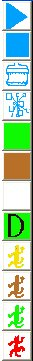
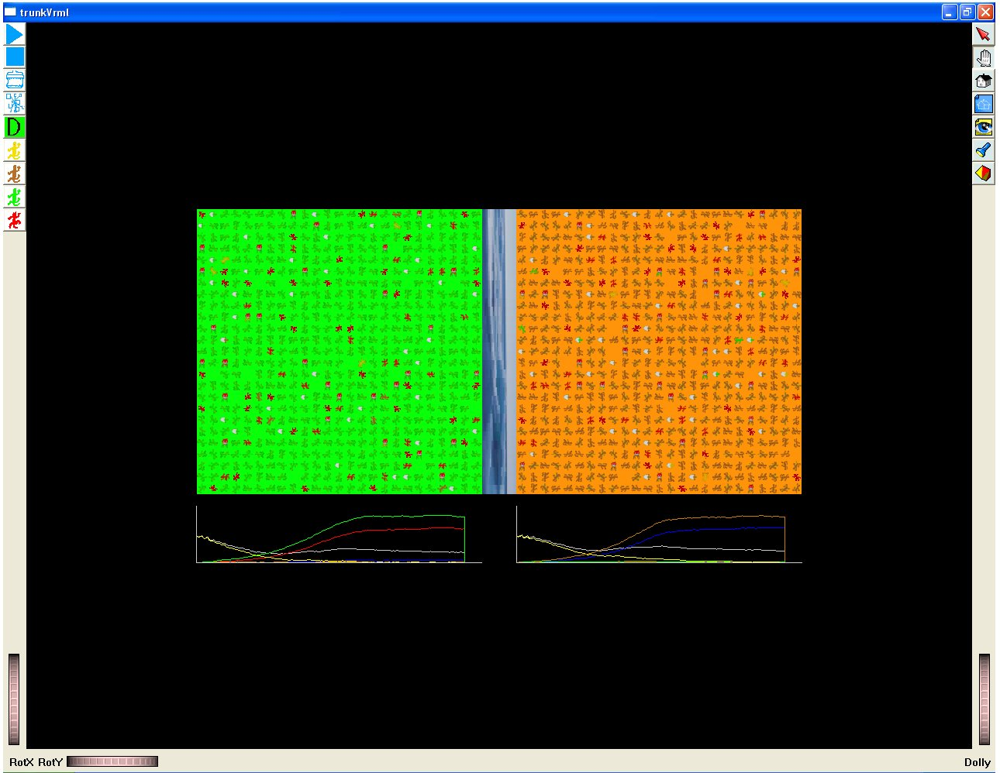

Practica 3
Especiación.
Esta
practica utiliza todos los mecanismos de la practica anterior para
mostrar como
dos poblaciones que en un principio son iguales, al encontrarse
separadas,
comienzan a volverse diferentes conforme pasa el tiempo debido a la
presión de
la selección natural que empuja a cada una a adaptarse a su
medio ambiente
particular.
Gracias
a
esto podemos mostrar como es que en un principio una sola especie da
lugar a
dos especies separadas conforme pasa el tiempo, debido a las
propiedades del
ambiente particular a cada una y al aislamiento reproductivo.
En esta
práctica
se utilizan los mismos recursos de simulación para imitar el
proceso de
selección natural y la mutación de las poblaciones
naturales.
El
proceso
evolutivo en este juego se da al igual que en el juego anterior cuando
después
de un tiempo las poblaciones enteras han cambiado de color. Aunque a
diferencia
de la práctica anterior, en cada una de las poblaciones se tiene
un ambiente
diferente y el énfasis se encuentra al mostrar como las
poblaciones se
diferencian mas cada una de otra conforme pasa el tiempo y con ello una
manera
en como se forman las diferentes especies.
También
aquí la selección natural se encuentra representada por
la presencia de gatos,
que se comen a las lagartijas, y con más dificultad a las que se
parecen al
ambiente. Y también la adaptación al medio ambiente de
las lagartijas, se
encuentra representada por el cambio de los colores en las lagartijas
hacia
parecerse mas a su medio ambiente, gracias a los mutantes que se
parecen mas a
su medio ambiente.
Objetivos.
El
objetivo
consiste en entender el proceso por el cual gracia a la
selección natural
actuando sobre las variantes de mutantes que surgen de manera natural
en las
poblaciones y el asilamiento reproductivo se da lugar a la
creación de nuevas
especies.
En
nuestro
caso como es que los colores en la población de lagartijas
cambian en el tiempo
debido a la presión de la depredación por gatos, siendo
substituido el color
inicial por uno nuevo surgido por mutación y como se
perpetúan estos mutantes
para cada una de las poblaciones volviéndolas diferentes.
Los
controles de la práctica.

Los
botones
que se tienen para modificar el comportamiento del programa son los
siguientes:
-Primero
tenemos los dos clásicos de avance y alto, ningún
botón aparte del de alto,
funciona si el avance ha sido activado, para reactivar la
función de los
botones, es necesario detener el programa por medio del botón de
alto.
-El
siguiente, el botón con una D, determina que alelo es el
dominante, si el
característico para el color café o para el color verde,
el color de fondo del
botón nos muestra cual es dominante en este momento o al cambiar.
-Y por ultimo tenemos los botones para colocar
criaturas en lugares particulares, tanto presas como depredadores.
Primero
se oprime el botón de selección del lado derecho y al
cambiar el cursor (a cursor para
seleccionar), se oprime el botón de la criatura que se desee
colocar, y al fin
se selecciona el lugar donde se piensa colocar a la criatura.
El
“tablero” de juego.
En todo
es
igual a lo descrito con anterioridad, en la practica anterior, la unica
diferencia es que se tienen dos tableros y dos partes de graficos donde
se
muestra la cantidad de individuos y halelos en cada una de las
poblaciones
separadas por una barrera geografica.

El programa
Para
iniciar el programa solo se necesita hacer un doble clic sobre el
archivo que
dice practica3, esté se encuentra en el mismo directorio que la
pagina de
inicio.
Una
practica de ejemplo.
Primero
que
nada abrimos el programa a través del enlace en esta pagina.
Después
oprimimos el botón de llenado con el cual en el tablero aparecen
organismos
distribuidos de manera azarosa, en esta practica el tablero se llena
solo con
lagartijas amarillas y gatos, ya que el objetivo es ver como estas
lagartija
son remplazadas por los mutantes verdes y cafés que van
apareciendo por
mutación.
Luego
podemos oprimir el botón de avance y ver como se mueven los
organismos y como
se da la dinámica en un tipo de piso neutro, es decir sin
ninguno de los
organismos en el tablero favorecido por su color, en particular como
una
pequeñísima parte de la población se vuelve verde
y café por mutación, pero que
al no ser favorecidos por la selección no predominan en la
población.
A
continuación oprimimos el botón de alto, y cambiamos el
tipo de piso por uno
café o verde, y oprimimos el botón de avance, y con ello
observamos como las
lagartijas que surgen o surgieron ya por mutación y que se
parecen mas al tipo
de piso son la que comienzan a crecer dentro de la población
gracias a la
selección natural y terminan por remplazar a la población
original.
Después
de
repetir estos pasos no se tiene un mismo resultado de manera forzosa,
en
general es mucho mas probable que las lagartijas que tienen un color
mucho mas
parecido al color del piso sean las que predominen, pero para que se de
este
resultado es necesario que pase algún tiempo en el cual si no se
dan la
condiciones apropiadas, podría ser que incluso la
población entera se
extinguiera, es decir que todos fueran comidos por los gatos, pero esto
forma
parte dentro de los procesos en biología donde no pasa siempre lo mismo sino que todo se da con una cierta
probabilidad.